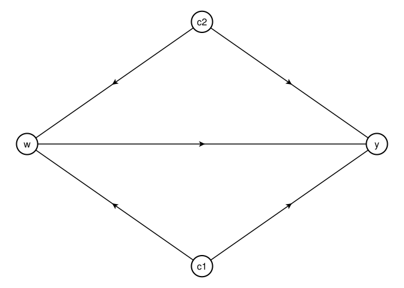
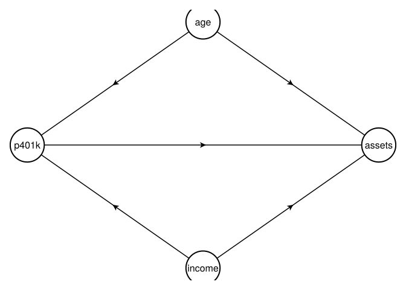
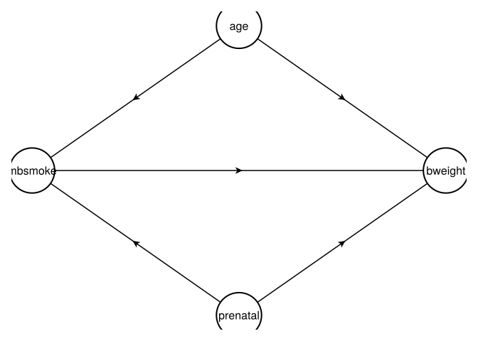

using CairoMakie
using GraphMakie
using Graphs
using GeometryBasics1 Identification & Potential Outcomes
1.1 Why Do We Need Tools for Causal Inference?
The main reason we need tools for causal inference is that “association is not causation”. We have known how to do association for a long time. In econometrics, people have studied various models for different situations, but mostly associational. But why is association not causation?
The reason is that we may have confounding variables.
1.2 Confounders
In this graph, we have \(w\) (treatment), \(y\) (outcome), and two confounders \(c1\) and \(c2\). Both \(c1\) and \(c2\) affect both \(w\) and \(y\). Therefore, if we just look at the association between \(w\) and \(y\), it may be due to the confounding effect of \(c1\) and \(c2\). We cannot say that the association is causal.

Here is a concrete example with 401(k) participation and assets: It could be the case that income and age are causing both 401(k) participation and assets. Therefore, the association between 401(k) participation and assets may not be causal. We need to control for income and age to identify the causal effect of 401(k) participation on assets.

And another example with birth weight and maternal smoking: It could be the case that prenatal care and maternal age are causing both maternal smoking and birth weight. It could be that maternal smoking has nothing to do with birth weight. But age and prenatal care are causing both maternal smoking and birth weight, therefore maternal smoking appears to cause birth weight.

1.3 Controlled and Uncontrolled Confounders
If we can control for all confounders then we do have causation from correlation. However, first, do we have all confounders in our data? Secondly, how do we control for them. In a randomised experiment, we don’t have these problems. In an observational study, we have these two problems. In the graph, we may have “c2” unobserved, “c1” observed, for example. Then any estimation of the effect from \(w\) to \(y\) is biased.
1.4 Potential Outcome Setup
We use the Potential Outcomes framework, also called counterfactual framework to study causal effect. What is a potential outcome? Suppose we have the simplest situation. A treatment has two states, treated and control (untreated). And we have a person (subject) who then has two potential outcomes \(Y(1)\) and \(Y(0)\). Consider these two fixed.
That is, every one subject has two potential outcomes. That can be seen as pre-determined. That is, even before the experiment, or program, they are already there. The experiment is to try to recover them. However, recovering each individual treatment effect \(\tau_i = Y_i(1) - Y_i(0)\) is not possible, because it’s impossible to observe both \(Y_i(1)\) and \(Y_i(0)\). Only some average treatment effects can be estimated.
We label treatment assignment status \(W\), covariates \(X\).
1.5 ATE, ATT and ATU
Let’s define some treatment effects:
\[ \tau_{ATE} = E[Y(1) - Y(0)] \]
\[ \tau_{ATT} = E[Y(1) - Y(0) | W=1] \]
\[ \tau_{ATU} = E[Y(1) - Y(0)| W=0] \]
\[ \tau_{ATE} = \rho \tau_{ATT} + (1-\rho) \tau_{ATU}\]
where \(\rho= P(W=1)\).
1.6 Identification: From Potential Outcome to Observed
We focus on \(\tau_{ATT}\). To identify it, we need: \[ E[Y(1) | W=1)]\] which is easy, because we observe it.
And we need \[ E[Y(0) | W=1]\]
To identify this, we’ll need unconfoundedness: \[ E[Y(0) | W, X] = E[Y(0)| X] \] and overlap: \[ \pi(X)= P(W=1 | X=x) < 1 \]
Under unconfoundedness:
\[ E[Y(0)| W=1] = E[Y(0) | W=0] \]
\[ \small \begin{align} \tau_{ATT} &= E[Y(1) - Y(0) | W=1] \\ &= E[Y(1)|W=1] - E[Y(0)|W=0] \\ &= E[Y|W=1] - E[Y|W=0] \end{align} \]
Therefore ATT is identified. In randomised experiments, we can assume unconfoundedness. A difference-in-means estimator is consistent.
\[ \hat{\tau_{ATT}} = \bar Y_1 - \bar Y_0 \]
But in observational studies, most cases we cannot assume unconfoundedness. What can we do to justify unconfoundedness better?
1.7 Unconfoundedness and Overlap
Weaker Assumptions: Unconfoundedness (conditional independence, or ignorability): \[ E[Y(0) | W, X] = E[Y(0)| X] \] Overlap: \[ \pi(X)= P(W=1 | X=x) < 1 \] SUTVA (stable unit treatment value assumption): 1. No interference between units. No spillovers. 2. Consistency. No hidden versions of treatment or control. Treatment is clearly defined.
Within each subgroup of \(X=x\), W is independent of \(Y(0)\). With the overlap assumption, we ensure there is a comparable control unit for each treated unit.
However, these two criteria are often contradictory: we may need more covariates to satisfy conditional independence; meanwhile, if the dimension of covariates goes high, then it’s likely in some partition we don’t have control units.
We need four assumptions for identification:
- Unconfoundedness (conditional independence, or ignorability)
- Overlap (positivity, common support)
- No interference
- Consistency
1.8 Observational Data Flowchart
In observational studies, I summarise the decision what method to use for indentification of causal effect:
flowchart LR
A[Observational data Y,W,X] --> B{Unconfoundedness?}
B --> | Yes | C{Parametric?}
C --> | Yes | D(RA)
C --> | Yes | E(IPW)
C --> | Yes | F(AIPW)
C --> | Yes | G(IPWRA)
C --> | No | H(IF based estimators)
C --> | No | I(TMLE)
C --> | No | J(DoubleML)
B --> | No | K{Panel data?}
K --> | Yes | L{Parallel Trend?}
L --> | Yes | M(DID)
L --> | No | N(Synthetic Control)
L --> | No | O(Synthetic DID)
K --> | No | P{Instrument?}
P --> | Yes | Q(IV or RDD)
P --> | No | R(You are stuck!)